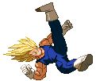

Photon Bomb (LV1)
Replacing the Galick Gun is the Photon Bomb; a red energy orb that
breaks into a cloud of several exlosions upon impact, juggling the opponent.
Can be combo'ed into from most basic attacks and from the Weak version of the Suprise Elbow.


Machine Gun Tantrum (LV1)
While the Bakuhatsuha from Normal Vegeta got downgraded from a Super to a Special,
the reverse is the case for the Machine Gun Temper, which became a Super; the Machine Gun Tantrum.
Vegeta charges up and then releases a volley of 12 very fast-traveling Ki Blasts.
The move can be performed in the air as well; in that case, Vegeta will fire 12 Ki Blasts vertically downward.


Atomic Wave (LV1)
This move is a bit different from what you've seen before.
It's actually a super grab that needs the enemy to be close in order to work to it's full potential.
Vegeta sticks out his arm, taunting the enemy. If he touches the enemy,
he instantly launches an Atomic Wave which pushes the opponent all the way back to the wall.
There, the wave explodes and the enemy is stunned for a moment from being knocked against the wall.
The most likely follow-up attack would be the Sliding Kick
as it closes the distance between the two fighers the quickest.
Another option is to launch out a Photon Bomb followed by a Machine Gun Tantrum,
it's a very cool projectile-based combo.
Should you whiff the initial gesture, it acts like a Super Taunt of sorts,
but this leaves you extremely wide open.

Royal Edict (LV1)
Laying the smackdown! After three punches, the third being a big uppercut that launches the enemy, Vegeta leaps up and delivers a devastating kick to their now-exposed spine, keeping them stunned and floating in the air for a while,
before finishing with a powerful teleporting smash-down kick. Vegeta will always throw out the first two punches, even if the first one is blocked or has whiffed.


Big Bang Attack (LV1~2~3)
The Big Bang is a very slow moving projectile that can absorb a lot of hits.
So while you might not be able to quickly punish enemies from afar,
it's absorbing/shielding nature can make it act like a moving wall of death,
though the opponent can very well jump over it. Also, you can keep charging the move for as long as you'd desire,
making the Big Bang orb grow in size up to two times.
For about 2 seconds after Vegeta launches the Big Bang, you can input the QCF+P command to have him manually detonate the orb, causing a lot of damage.
In the latest update to Majin Vegeta, the Big Bang was recoded to work more like Piccolo's Special Beam Cannon;
starting out as a Lvl1 move, but draining any remaining power bar you currently have left, making it stronger,
boosting it up to a Lvl3 move.

Saiyan Pride Beatdown (LV3)
In Majin Vegeta's Ultimate move, he'll fire a quick Atomic Bullet.
When it hits the opponent (it's unblockable), it sends the opponent flying back against the wall
and Vegeta will fire a short burst of Atomic Bullets, pinning the opponent down against the wall.
Vegeta then automatically dashes towards them delivers a heavy shot to the gut.
The "mash buttons" icons appear, so you know what time it is...to mash buttons!
Vegeta will throw out attack after attack, greatly stunning the enemy.
For the regular version, he'll take a leap backwards and finish it off with an Atomic Blast, exploding upon impact.
When performed during Sanity Mode, the move costs Lv2 instead of lv3 and will end with a unique Finisher Attack depending on how far your Sanity Bar is filled at the time, replacing the Atomic Blast Finisher;
Lv1 - Galactic Juggle.
Lv2 - Final Flash.
Lv3 - Final Aura Burst.
When performed during Sanity Mode, the move costs Lv2 instead of lv3 and will end with a unique Finisher Attack depending on how far your Sanity Bar is filled at the time, replacing the Atomic Blast Finisher;
Lv1 - Galactic Juggle.
Lv2 - Final Flash.
Lv3 - Final Aura Burst.